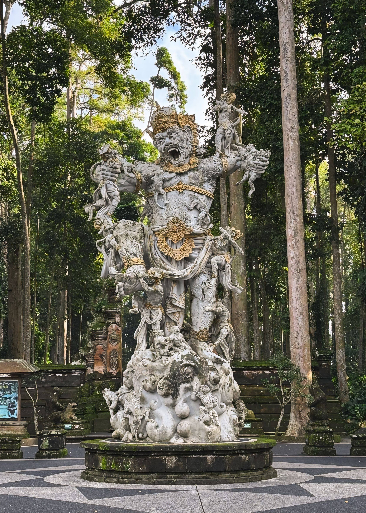

“Kumbakarna Laga: Keberanian dan Kisah Epik Ramayana dalam Seni Patung Bali”
Patung Kumbakarna Laga merupakan salah satu karya seni monumental di Bali yang menggambarkan pertempuran dalam kisah Ramayana. Patung ini memiliki nilai seni dan budaya yang tinggi serta menjadi sarana untuk mengenalkan kisah pewayangan Hindu kepada masyarakat.